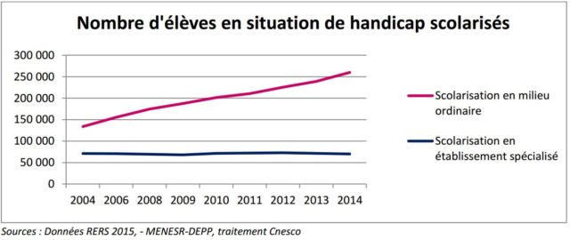

La discrimination.
7 % des 10-24 ans et 6 % des 25-54 ans déclarent avoir été victimes d’une discrimination. Mais le taux atteint 41 % pour les jeunes de 10 à 24 ans victimes d’un handicap et 23 % chez les adultes de 25 à 54 ans. On remarque donc le clivage présent entre les handicapés et les non handicapés.
Viennent en premier les « insultes et moqueries », puis les « mises à l’écart », les « traitements injustes » et enfin les « refus de droit ».
A l’exception des « insultes et moqueries » auxquelles les personnes ayant un problème de santé, mais sans handicap, sont plus sensibles que les personnes handicapées, les personnes handicapées se disent plus souvent victimes de mises à l’écart, de traitements injustes ou de refus de droits. On remarquera également que les discriminations qui pourraient relever d’une sanction juridique (« traitements injustes », « refus de droit ») Cette discrimination apparaît dans les groupes de paires. Ces écarts s’expliquent par des quotidiens et des centres d’intérêt divergents : les enfants passent du temps à l’école, et accordent plus d’importance aux moqueries des autres enfants, tandis que les adultes sont plus sensibles au droit, notamment dans le monde du travail.
Ensuite, parlons des inégalités de la vie quotidienne, que le handicap survient dès la naissance, suite à un accident ou à une maladie invalidante, le quotidien d’une personne à mobilité réduite peut s’avérer un véritable parcours du combattant. En effet, la moindre activité de la vie quotidienne que les valides ont l’habitude d’exécuter rapidement et sans difficulté représente pour certaines personnes vivant avec un handicap ou une paralysie, une épreuve qui met en péril son épanouissement et empêche son intégration totale dans la société.
Comme dans la plupart des pays européens, l’accueil en milieu ordinaire des élèves en situation de handicap est croissant en France.
En 2014, 252 285 élèves bénéficiaient d’une scolarisation en milieu ordinaire alors qu’ils n’étaient que 133 838 en 2004.
Ainsi, le nombre d’élèves en situation de handicap scolarisés en milieu ordinaire a pratiquement doublé en 10 ans. Durant cette même période, les effectifs des élèves en milieu spécialisé sont restés stables. Ils étaient ainsi 70 306 en 2014

Voici enfin quelques données sur les personnes atteintes de handicap en France.